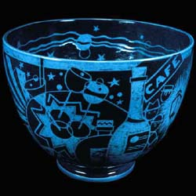

| Victor Schreckengost
American designer
The
American designer Viktor
Schreckengost was born into a potting family in Ohio in
1906 and first learnt ceramics at his father’s pottery. He
then studied at the Cleveland School of Art (now the Cleveland Institute
of Art) and in 1929 trained in Vienna with Michael Powolny. He returned
to the USA in 1930 and took up a teaching position at his former
institute. He also worked for Reginald Guy Cowen at the Cowen Pottery
Studio, designing modern, Jazz-influenced bowls, one of which was
bought by Eleanor Roosevelt. The Jazz Bowl (pictured) was decorated
with a bright blue slip and black glaze, which was scratched back
sgraffito style, creating the now famous Jazz imagery. In 1935 he
also designed the mass-produced dinnerware ‘Americana’
for American Limoges.
Schreckengost is a multitalented designer. He not only designed
ceramics, but also toys, cars, bicycles and even a radar system
for the US Army. It is estimated that every adult alive in the United
States today has handled objects designed by Viktor Schreckengost
or one of his students.
More Articles
More Artists of the Week
|